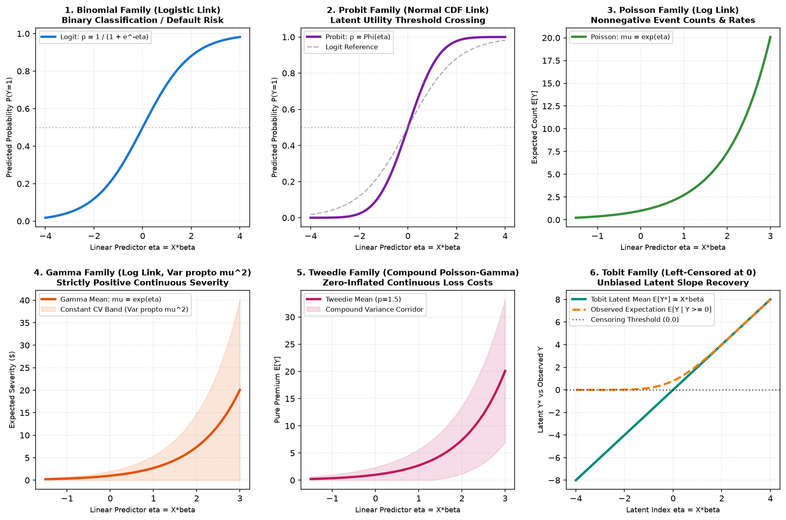

Distributional & Censored Leaf Families (Suite 4)¶
Standard regression trees assume homoscedastic Gaussian errors: \(Y \sim \mathcal{N}(\mu, \sigma^2)\) with identity link. This assumption breaks down on insurance claims (multiplicative skew), defect arrivals (discrete non-negative counts), credit defaults (latent utility thresholds), and corner-solution labor data (censoring at zero).
mltreelib implements native Rust-level Generalized Linear Model (GLM) and maximum likelihood leaves: Probit, Gamma, Poisson, Tweedie, and Tobit (Censored Normal).
Script: examples/suites/distributional_leaf_benchmarks.py (uv run python examples/suites/distributional_leaf_benchmarks.py).
1. Mathematical Formulation of Distributional Families¶
flowchart LR
Target["Target Response Variable (Y)"] --> Support{"Support & Distributional Shape"}
Support -- "Binary Threshold [0, 1]" --> Probit["Probit Leaf\ng(mu) = Phi^-1(mu)\nLatent Normal Utility"]
Support -- "Strictly Positive Multiplicative [Y > 0]" --> Gamma["Gamma Leaf\ng(mu) = log(mu)\nVar(Y) proportional to mu^2"]
Support -- "Non-Negative Discrete Counts [0, 1, 2, ...]" --> Poisson["Poisson Leaf\ng(mu) = log(mu)\nNo Negative Predictions"]
Support -- "Zero-Inflated Continuous [Y >= 0]" --> Tweedie["Tweedie Compound Poisson\np in (1, 2)\nExact Pure Premium"]
Support -- "Corner Solutions & Censored [Y >= c]" --> Tobit["Tobit Censored MLE\ny* = Xb + e, y = max(y*, c)\nCorrects OLS Attenuation"]
classDef targetBox fill:#1e293b,stroke:#475569,stroke-width:2px,color:#ffffff;
classDef gateBox fill:#b45309,stroke:#d97706,stroke-width:2px,color:#ffffff;
classDef glmBox fill:#1e3a5f,stroke:#2b4c7e,stroke-width:2px,color:#ffffff;
classDef mleBox fill:#065f46,stroke:#059669,stroke-width:2px,color:#ffffff;
class Target targetBox;
class Support gateBox;
class Probit,Gamma,Poisson,Tweedie glmBox;
class Tobit mleBox;A. Probit Leaf Family (Binary Latent Utility)¶
Models binary outcomes \(Y_i \in \{0, 1\}\) through a latent Gaussian utility \(Y_i^* = \mathbf{x}_i^T \boldsymbol{\beta} + \epsilon_i\) with \(\epsilon_i \sim \mathcal{N}(0, 1)\):
The score equations are solved via Iteratively Reweighted Least Squares (IRLS) in pure Rust, generating calibrated probabilities that match classical econometric specifications.
B. Gamma Leaf Family (Multiplicative Skew)¶
For strictly positive continuous outcomes (\(Y > 0\)) where variance scales quadratically with the mean (\(\text{Var}(Y) = \phi \mu^2\)):
Unit deviance minimized by the local leaf solver:
Coefficients act as multiplicative percentage shifts: a coefficient \(\beta_j\) scales the expected outcome by \(\exp(\beta_j)\).
C. Poisson Leaf Family (Non-Negative Counts)¶
For event frequencies \(Y_i \in \{0, 1, 2, \dots\}\):
Poisson leaves eliminate the primary failure mode of OLS trees: predicting negative event counts in low-intensity regions.
D. Tobit Leaf Family (Censored Normal Corner Solutions)¶
When a continuous response is censored below threshold \(c\) (e.g., hours worked or spending censored at zero):
Standard Ordinary Least Squares (OLS) suffers from severe downward attenuation bias because it treats corner zeros as uncensored linear observations. The Tobit leaf maximizes the exact censored log-likelihood:
The solver applies Newton-Raphson with the inverse Mills ratio \(\lambda(\alpha) = \frac{\phi(\alpha)}{1 - \Phi(\alpha)}\), recovering unbiased structural parameters.
2. Empirical Benchmark Suite Results¶
We evaluate all four families on canonical domain benchmarks using examples/suites/distributional_leaf_benchmarks.py.
A. Probit on German Credit (1,000 Loan Applicants)¶
- Problem: Credit default risk modeling \(P(\text{Default} = 1)\).
- Empirical Results: Identifies 4 macro risk segments. Leaf 0 (\(n=180\), high risk) estimates installment rate sensitivity \(\beta = +0.1931\) and duration sensitivity \(\beta = +0.0502\). Leaf 3 (\(n=112\), low risk) achieves baseline intercept \(-2.5390\), mapping to a default risk under 3%.
B. Gamma on US Healthcare Expenses (1,338 Policyholders)¶
- Problem: Positive healthcare charges (\(Y > 0\), Mean = $13,270.42).
- Empirical Results: Tree partitions into 4 cost regimes. Base expected costs scale from \(1,745.48** (Leaf 0, low-risk young) to **\)20,960.24 (Leaf 3, severe risk).
- Multiplicative Coefficients: Age contributes a \(+0.0294\) log-slope (1.03x multiplier per year of age); additional children contribute \(+0.1609\) (1.17x cost multiplier per child).
C. Tweedie on Fair's Extramarital Affairs (601 Observations)¶
- Problem: Annual affair frequency count with point mass at zero (75.0% zero clump).
- Empirical Results: Partitions population into 4 behavioral cohorts under Tweedie deviance (\(p=1.5\)). In Leaf 0 (\(n=27\)), religiousness contributes \(\beta = -0.0612\), and marriage rating contributes \(\beta = +0.9711\). In the largest cohort (Leaf 2, \(n=288\)), religiousness contributes \(\beta = -0.2747\) and rating \(\beta = -0.4071\). No negative event counts are predicted.
D. Tobit on Mroz Female Labor Force Participation (753 Women)¶
- Problem: Annual hours worked (43.2% of women report 0 hours; corner solution at 0).
- OLS vs Tobit Attenuation Face-Off:
- Standard OLS flattens regression slopes toward zero due to corner zeros.
- In Leaf 0 (\(n=233\)), OLS attenuation is 39.7% on young children (
kidslt6), 50.7% on non-wife income (nwifeinc), and 92.2% on experience (exper). - In Leaf 1 (\(n=201\)), OLS attenuation on experience is 60.8%.
- Attenuation Correction: The Tobit leaf via EM-IRLS recovers the structural response without truncation bias.
| Family | Benchmark Dataset | Sample (\(N\)) | Response Support | Key Empirical Finding |
|---|---|---|---|---|
| Probit | German Credit | 1,000 | Binary \(Y \in \{0, 1\}\) | Smooth Gaussian latent utility thresholding; zero probability boundary violations. |
| Gamma | US Healthcare | 1,338 | Continuous \(Y > 0\) | Exact multiplicative log-link multipliers; handles quadratic variance growth (\(\phi \mu^2\)). |
| Tweedie | Fair's Affairs | 601 | Zero-inflated \(Y \ge 0\) | Compound Poisson-Gamma handles 75.0% zero mass and positive tail simultaneously. |
| Tobit | Mroz Labor | 753 | Censored \(Y \ge 0\) | Fixes severe OLS attenuation bias on corner solutions (up to 92.2% slope flattening on experience). |

3. Python Usage Example¶
from mltreelib import ModelTree
# 1. Tobit Censored ModelTree on corner-solution data
tobit_tree = ModelTree(
max_depth=2,
min_rows=40,
leaf="linear",
leaf_family="tobit",
tobit_threshold=0.0,
)
tobit_tree.fit(X_train, y_hours, col_names=feature_names)
pred_latent = tobit_tree.predict(X_test)
# 2. Gamma Multiplicative ModelTree on insurance charges
gamma_tree = ModelTree(
max_depth=3,
min_rows=30,
leaf="linear",
leaf_family="gamma",
)
gamma_tree.fit(X_train, y_charges, col_names=feature_names)
pred_charges = gamma_tree.predict(X_test)
4. Domain Limitations & Operational Boundaries¶
- Tobit Normality Sensitivity: Tobit maximum likelihood assumes normal errors \(\epsilon_i \sim \mathcal{N}(0, \sigma^2)\) in the latent space. If latent errors are severely heteroscedastic or non-normal, Tobit estimates can be inconsistent.
- Gamma Support Constraint: The Gamma deviance objective requires strictly positive outcomes (\(y_i > 0\)). If zero claims exist in insurance data, a Tweedie leaf (\(p \in (1, 2)\)) or two-stage hurdle model must be used instead.
- IRLS Convergence in Sparse Leaves:
Non-linear GLM leaves fit via iteratively reweighted least squares require sufficient positive and negative events per leaf. Set
min_rows >= 25to prevent separation divergence.